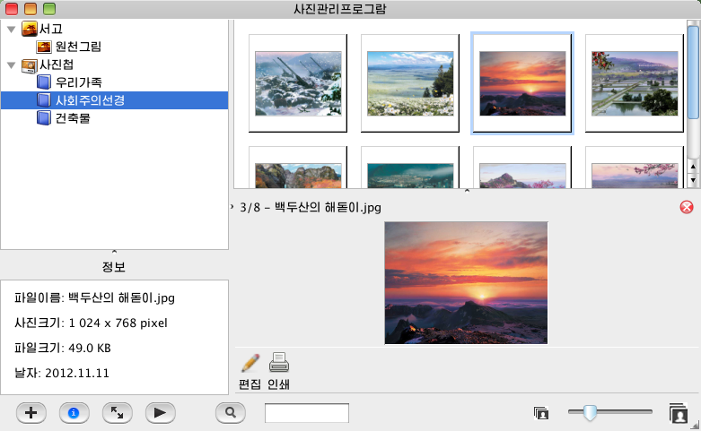
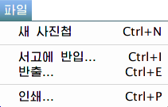
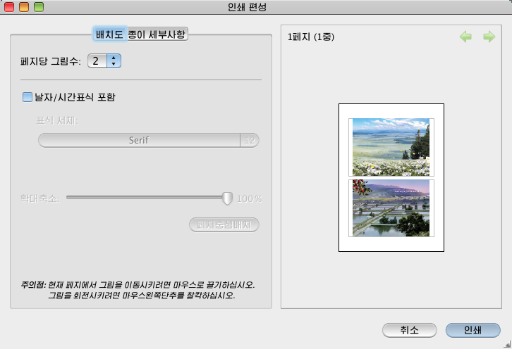
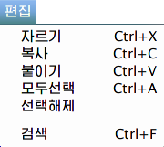
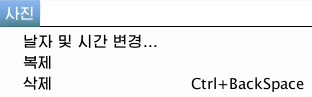
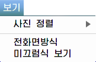
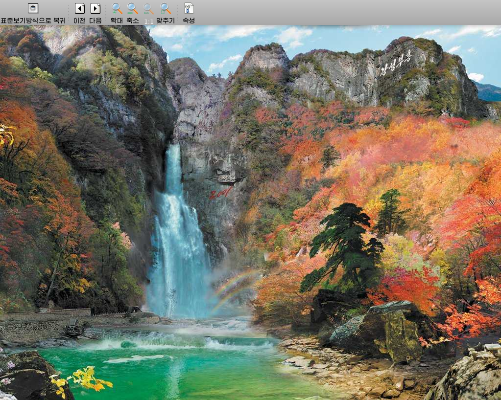
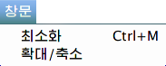
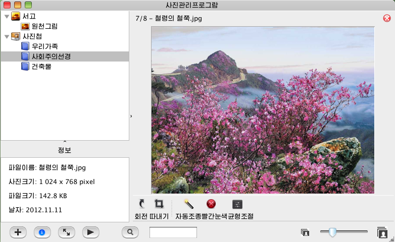

사진관리프로그람에 대하여
소개이 프로그람은 《붉은별》사용자용체계3.0판에서 리용하는 사진관리프로그람(kPhoto)입니다.
이 프로그람을 리용하면 사진화상들을 끌어들여 원천그림서고를 작성하고 그것들로 여러가지 사진첩들을 만들어 관리할수 있으며 매 사진들의 축소화상을 볼수도 있고 선택한 사진에 대한 간단한 효과처리를 진행할수도 있으며 또 그것들을 인쇄할수도 있습니다.
사진관리프로그람 기동방법파일열람기를 기동하고 <응용프로그람\사진관리프로그람>을 선택하십시오.
사진관리프로그람의 기본창문사진관리프로그람을 기동하였을 때 아래와 같은 창문이 표시됩니다.

서고사진관리프로그람에서 사용하는 원천그림파일들이 들어있습니다. 이 서고에 사진을 가져오거나 서고에서 사진을 삭제할수 있습니다.
사진첩사용자가 작성한 사진첩들이 들어있습니다. 사진첩이 없을 때에는 표시되지 않습니다.
정보창문선택한 사진에 대한 정보를 보여줍니다.
사진편집도구띠편집과 인쇄를 위한 도구띠단추들이 포함되여있습니다.
사진관리프로그람의 기본차림표사진관리프로그람의 기본차림표들에는 아래와 같은것들이 있습니다.
파일차림표파일차림표는 다음의 그림과 같이 구성되여있습니다.

새 사진첩차림표띠에서 <파일\새 사진첩>을 선택하십시오.
나타나는 대화창문에서 새로 만들려는 사진첩의 이름을 입력하고 <창조>단추를 누르십시오.
입력한 이름을 가진 사진첩이 새로 창조됩니다.
서고에 반입...차림표띠에서 <파일\서고에 반입>을 선택하십시오.
나타나는 대화창문에서 반입하려는 파일들을 선택하고 <확인>단추를 누르십시오.
선택한 사진들이 원천그림으로 반입됩니다.
반출파일이 선택된 상태에서 차림표띠의 <파일\반출>을 선택하십시오.
나타나는 대화창문에서 반출하려는 등록부를 선택하고 <반출>단추를 누르십시오.
선택된 서고의 사진이나 사진첩의 사진들이 지정한 등록부로 반출됩니다.
인쇄사진들이 선택된 상태에서 차림표띠의 <파일\인쇄>를 선택하십시오.
그러면 다음과 같은 인쇄편성대화창문이 나타납니다.

인쇄편성대화창문에서 필요한 설정을 한 다음 <인쇄>단추를 누르십시오.
이때 나타나는 GNOME서고의 인쇄대화창문에서 인쇄와 관련한 여러가지 설정을 진행할수 있습니다.
마감에 인쇄가 성공적으로 진행됩니다.
편집차림표편집차림표는 다음의 그림과 같이 구성되여있습니다.

자르기사진들이 선택된 상태에서 차림표띠의 <편집\자르기>를 선택하십시오.
선택한 사진들이 파일자르기되는것으로 확정됩니다.
복사사진들이 선택된 상태에서 차림표띠의 <편집\복사>를 선택하십시오.
선택한 사진들이 파일복사되는것으로 확정됩니다.
붙이기사진들이 자르기나 복사되는것으로 확정된 상태에서 차림표띠의 <편집\붙이기>를 선택하십시오.
자르기나 복사되는것으로 확정된 파일들이 지정된 사진첩이나 서고에 붙여집니다.
모두선택차림표띠에서 <편집\모두선택>을 선택하십시오.
현재 선택된 서고나 사진첩의 모든 사진들이 선택됩니다.
선택해제사진들이 선택된 상태에서 차림표띠의 <편집\선택해제>를 선택하십시오.
선택되였던 사진들이 선택해제됩니다.
검색차림표띠에서 <편집\검색>을 선택하십시오.
입력한 글자와 정합되는 사진파일들만이 보여집니다.
사진차림표사진차림표는 다음의 그림과 같이 구성되여있습니다.

날자 및 시간 변경...사진들이 선택된 상태에서 차림표띠의 <사진\날자 및 시간 변경...>을 선택하십시오.
나타나는 대화창문에서 변경하려는 날자와 시간을 선택한 다음 <확인>단추를 누르십시오.
선택된 사진에 선택한 날자와 시간이 덧붙여집니다.
복제사진들이 선택된 상태에서 차림표띠의 <사진\복제>를 선택하십시오.
선택된 사진이 복제됩니다.
삭제사진들이 선택된 상태에서 차림표띠의 <사진\삭제>를 선택하십시오.
선택된 사진이 삭제되여 휴지통에 들어갑니다.
보기차림표보기차림표는 다음의 그림과 같이 구성되여있습니다.

사진 정렬차림표띠에서 <보기\사진 정렬>을 선택하십시오.
나타나는 부분차림표에서 무엇을 기준으로 정렬하겠는가를 선택하십시오.
현재의 사진첩이나 서고의 사진들이 선택한 특성을 기준으로 정렬됩니다.
전화면방식차림표띠에서 <보기\전화면방식>을 선택하십시오.
현재의 사진첩의 사진들을 아래 그림과 같은 전화면방식으로 열람할수 있습니다.

미끄럼식 보기차림표띠에서 <보기\미끄럼식 보기>를 선택하십시오.
현재의 사진첩의 사진들을 전화면방식에서 자동미끄럼식으로 열람할수 있습니다.
창문차림표창문차림표는 다음의 그림과 같이 구성되여있습니다.

최소화차림표띠에서 <창문\최소화>를 선택하십시오.
사진관리프로그람이 최소화되여 아래의 일감띠에 놓이게 됩니다.
확대/축소차림표띠에서 <창문\확대/축소>를 선택하십시오.
사진관리프로그람을 확대 및 축소할수 있습니다.
도움말차림표도움말차림표는 다음의 그림과 같이 구성되여있습니다.
사진관리프로그람 도움말차림표띠에서 <도움말\사진관리프로그람 도움말>을 선택하십시오.
사진관리프로그람에 대한 도움말을 볼수 있습니다.
사진관리프로그람의 편집도구띠선택한 사진을 마우스로 두번누르기하면 아래 그림과 같은 편집상태로 들어가게 됩니다.

도구띠를 리용하여 사진의 회전, 사진따내기 등 사진편집을 진행합니다.
사진관리프로그람의 편집도구띠선택한 사진을 마우스로 두번누르기하면 아래 그림과 같은 편집상태로 들어가게 됩니다.
사진첩의 복제와 삭제사진첩 복제복제하려는 사진첩을 선택하고 마우스오른쪽단추를 누를 때 나타나는 차림표에서 <복제>를 선택하십시오.
선택한 사진첩이 복제됩니다. 복제된 사진첩의 이름에는 원래 사진첩의 이름에 괄호안에 일련번호가 들어있는 문자렬이 덧붙여집니다.
사진첩 삭제삭제하려는 사진첩을 선택하고 마우스오른쪽단추를 누를 때 나타나는 차림표에서 <삭제>를 선택하십시오.
선택한 사진첩이 삭제됩니다.